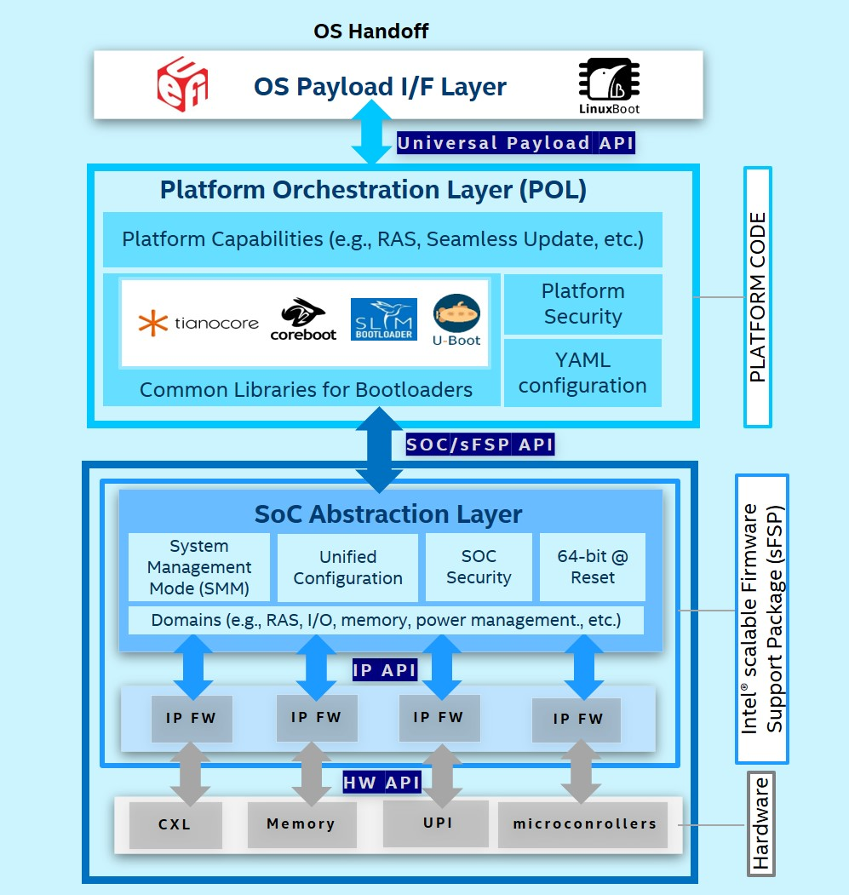

1. Universal Scalable Firmware (USF) Specification¶
Version 0.7
October 2021
© Copyright 2021 - Document content licensed under a Creative Commons Attribution 4.0 International license
1.1. Terminology¶
Early personal computers used a “Basic Input/Output System” (BIOS) to boot the system and provide communication between hardware and the Operating System (OS). Hence the term BIOS has come to be used as a generic term for all computer firmware, but this is not technically correct. In the 1990s, Intel developed the “Extensible Firmware Interface” (EFI) to provide more features than legacy BIOS, and this eventually evolved into the Unified Extensible Firmware Interface (UEFI) maintained by the Unified EFI Forum, Inc. Most modern PCs ship with some variation of UEFI firmware, and UEFI is widely supported by both commercial and open source operating systems. Both TianoCore EDKII and Intel’s Minimum Platform Architecture (MPA or “min platform”) are implementations based on the UEFI standard for system firmware.
This Specification uses “firmware” or “system firmware” interchangeably to indicate a computer’s pre-boot environment. “BIOS” may also be used as a generic term, and should not be considered a reference to legacy firmware implementations.
1.2. Motivation for Universal Scalable Firmware¶
Firmware implementations such as TianoCore EDKII have served the industry well for a couple of decades now. But issues such as the following are now driving the need for new system firmware standards:
- Growing demands from customers requiring firmware flexibility to easily support various bootloaders.
- Fragmented Tianocore/EDKII/min-platform/FSP solutions are leading to higher development and validation cost.
- Closely coupled Platform/SOC/IP level firmware design & code are resulting in low reusability and long time to market (TTM).
- High complexity with key modules like Memory Reference Code (MRC) and security result in quality, test, and debug challenges.
- Limited modularity.
- Lack of unified/common interfaces to support platform XPUs (CPU, dGPU, etc).
The goal of developing the Universal Scalable Firmware standard is to evolve modularity to scale for an IP firmware development model, with an emphasis on simplicity, scalability, debuggability, readability and determinism.
1.3. Simplicity, Determinisim and Debuggability¶
The three attributes of Simplicity, Determinism and Debuggability go together. Firmware plays a major role in debugging hardware, silicon features, and various technologies such as Security, Power Management, IO, Virtualization, RAS, etc. Hence firmware should lend itself to readability and determining the sequence of operations by reading the source code. Firmware is the abstraction layer and often has to deal with unstable hardware and silicon workarounds. A simple debug-friendly infrastructure (hardware debug, not just software) is called for. Today’s platform and SoC complexity calls for a model of replaceable IP Modules, with the associated firmware components traveling with that IP.
1.4. USF Layers¶
The layers of Universal Scalable Firmware are described in the following diagram.
{kind=link}
Figure 1: USF stack
Starting from the top of this stack, we have the following items.
1.4.1. OS Interfaces¶
These are well-known interfaces such as ACPI, UEFI, Kexec, or Multi-boot, that provide a means to interact with pre-OS and runtimes.
1.4.2. Universal Payload¶
A Universal Payload API for different OS payloads such as UEFI, LinuxBoot, VaultBoot and ACRN embedded hypervisor, plus support for various bootloaders such as tianocore/EDKII, coreboot, slim bootloader, and u-boot.
1.4.3. Platform Orchestration Layer (POL)¶
Simplified ACPI support, common libraries for various bootloaders & Rust language, standard binary configuration through YAML, support for FW attestation, authentication, measurement, and modern update.
1.4.4. Scalable Firmware Support Package (sFSP)¶
Scalable Firmware Support Package (sFSP) support for 64-bit reset vector, SMM encapsulation, various domain modules, authentication, unified configuration, and SOC level validation.